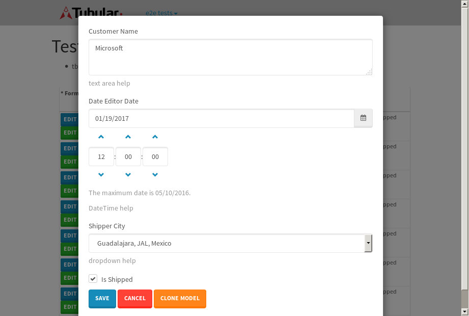
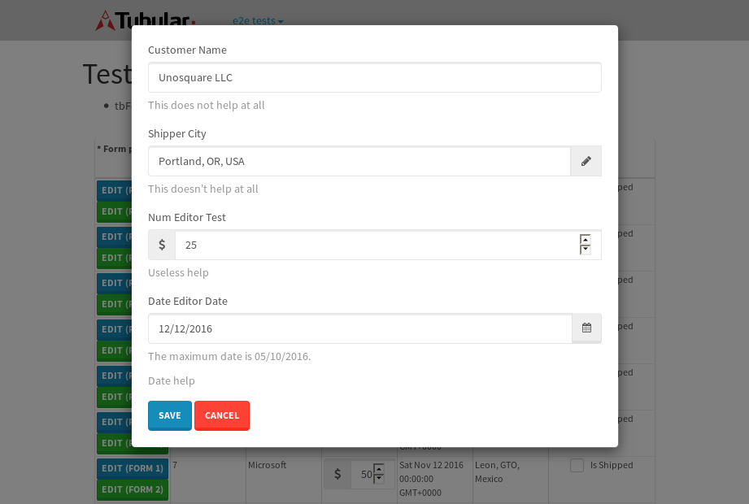
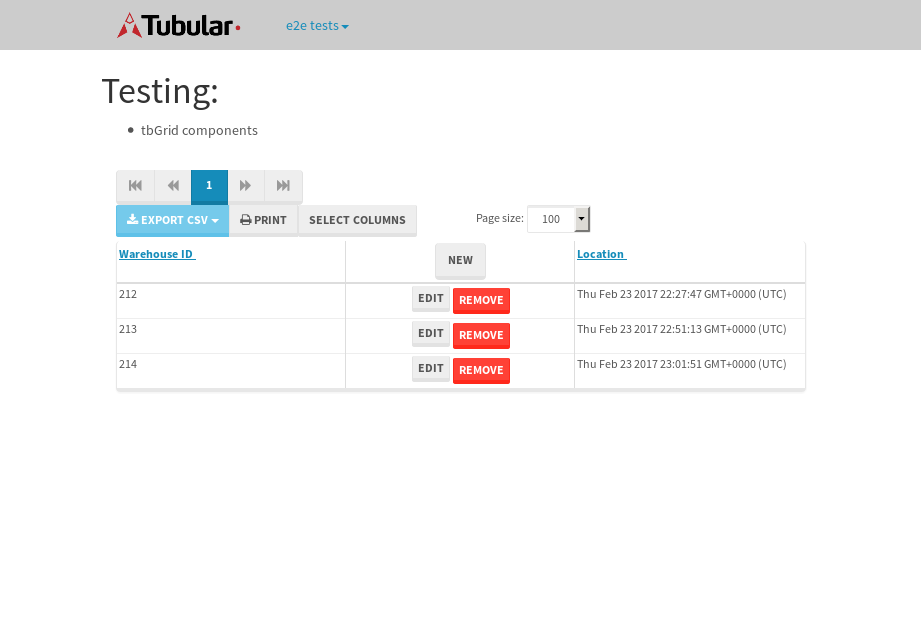
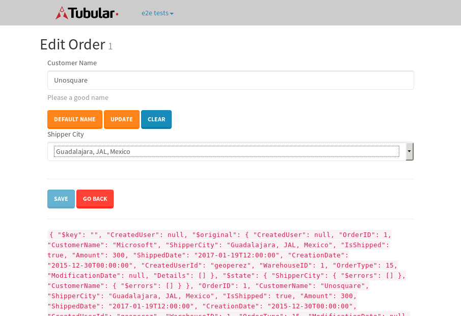
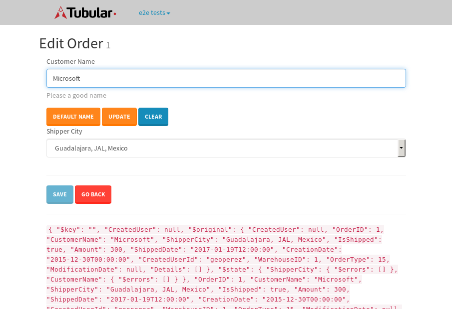

tbColumn.Grid Sorting - 28.359sTests: 5Skipped: 0Failures: 0 should sort data in ascending order then on descending order when sorting by Order Id column - 5.542sTests passed: 100.00%should order data in ascending order when click-sorting an unsorted text column - 5.177sTests passed: 100.00%should order data in descending order when click-sorting an ascending-sorted text column - 6.547sTests passed: 100.00%should order data in ascending order when click-sorting an unsorted date column - 5.361sTests passed: 100.00%should order data in descending order when click-sorting twice an unsorted date column - 5.731sTests passed: 100.00%
tbEmptyForm - 3.691sTests: 3Skipped: 0Failures: 0 should have an empty required field - 0.801sTests passed: 100.00%should not be able to click on save - 0.634sTests passed: 100.00%should load default value for numeric field - 0.566sTests passed: 100.00%
Tubular Filters.tbColumnFilter - 117.133sTests: 12Skipped: 0Failures: 0 should cancel filtering when clicking outside filter-popover - 10.809sTests passed: 100.00%should disable Value text-input for "None" filter - 9.941sTests passed: 100.00%should disable apply button for "None" filter - 6.945sTests passed: 100.00%should decorate popover button when showing data is being filtered for its column - 12.01sTests passed: 100.00%should correctly filter data for the "Equals" filtering option - 8.918sTests passed: 100.00%should correctly filter data for the "Not Equals" filtering option - 9.623sTests passed: 100.00%should correctly filter data for the "Contains" filtering option - 9.612sTests passed: 100.00%should correctly filter data for the "Not Contains" filtering option - 8.885sTests passed: 100.00%should correctly filter data for the "Starts With" filtering option - 7.215sTests passed: 100.00%should correctly filter data for the "Not Starts With" filtering option - 7.395sTests passed: 100.00%should correctly filter data for the "Ends With" filtering option - 6.931sTests passed: 100.00%should correctly filter data for the "Not Ends With" filtering option - 7.684sTests passed: 100.00%
Tubular Filters.tbColumnDateTimeFilter - 139.443sTests: 12Skipped: 0Failures: 0 should cancel filtering when clicking outside filter-popover - 7.783sTests passed: 100.00%should disable Value text-input for "None" filter - 7.122sTests passed: 100.00%should disable apply button for "None" filter - 6.969sTests passed: 100.00%should clear filtering when clicking on Clean button - 17.352sTests passed: 100.00%should decorate popover button when showing data is being filtered for its column - 11.949sTests passed: 100.00%should correctly filter data for the "Equals" filtering option - 7.508sTests passed: 100.00%should correctly filter data for the "Not Equals" filtering option - 7.61sTests passed: 100.00%should correctly filter data for the "Between" filtering option - 12.503sTests passed: 100.00%should correctly filter data for the "Greater-or-equal" filtering option - 12.247sTests passed: 100.00%should corretlly filter data for the "Greater" filtering option - 11.842sTests passed: 100.00%should correctly filter data for the "Less-or-equal" filtering option - 12.09sTests passed: 100.00%should correctly filter data for the "Less" filtering option - 12.362sTests passed: 100.00%
Tubular Filters.tbColumnOptionsFilter - 81.648sTests: 3Skipped: 0Failures: 0 should cancel filtering when clicking outside filter-popover - 8.855sTests passed: 100.00%should decorate popover button when showing data is being filtered for its column - 11.702sTests passed: 100.00%should filter column-elements in accordance to the selected filter when selecting a single option - 49.582sTests passed: 100.00%
Tubular Filters.tbTextSearch - 50.606sTests: 5Skipped: 0Failures: 0 min-chars is not set - 1.373sTests passed: 100.00%should filter data in searchable-column customer name to matching inputted text, starting from 3 characters - 7.037sTests passed: 100.00%should filter data in searchable-column shipper city to matching inputted text, starting from 3 characters - 12.141sTests passed: 100.00%should show clear button when there is inputted text only - 7.667sTests passed: 100.00%should clear filtering when clicking clear button - 16.601sTests passed: 100.00%
tbForm related components.tbCheckboxField - 7.131sTests: 2Skipped: 0Failures: 0 should save changes on "SAVE" - 3.349sTests passed: 100.00%should discard changes on "CANCEL" - 2.006sTests passed: 100.00%
tbForm related components.tbDropDownEditor - 14.523sTests: 5Skipped: 0Failures: 0 should set initial input value to the value of "value" attribute when defined - 1.908sTests passed: 100.00%should show the component name value in a label field when "showLabel" attribute is true - 2.475sTests passed: 100.00%should show a help field equal to this attribute, is present - 2.048sTests passed: 100.00%should submit modifications to item/server when clicking form "Save" - 3.6sTests passed: 100.00%should NOT submit modifications to item/server when clicking form "Cancel" - 3.975sTests passed: 100.00%
tbForm related components.tbTextArea - 22.012sTests: 7Skipped: 0Failures: 1 should set initial input value to the value of "value" attribute when defined - 4.459sTests passed: 100.00%should be invalidated when the number of chars is not in the range of "min" and "max" attributes - 3.189sExpected false to be true.✗Expected 0 to be less than 0.✗Tests passed: 33.33%should show the component name value in a label field when "showLabel" attribute is true - 3.147sTests passed: 100.00%should show a help field equal to this attribute, is present - 1.911sTests passed: 100.00%should require the field when the attribute "required" is true - 2.285sTests passed: 100.00%should submit modifications to item/server when clicking form "Save" - 3.382sTests passed: 100.00%should NOT submit modifications to item/server when clicking form "Cancel" - 2.81sTests passed: 100.00%
tbForm related components.tbDateEditor - 15.858sTests: 6Skipped: 0Failures: 0 should set initial date value to the value of "value" attribute when defined - 2.073sTests passed: 100.00%should be invalidated when the date is not in the range of "min" and "max" attributes - 3.903sTests passed: 100.00%should show the component name value in a label field when "showLabel" attribute is true - 1.74sTests passed: 100.00%should show a help field equal to this attribute, is present - 1.675sTests passed: 100.00%should submit modifications to item/server when clicking form "Save" - 2.766sTests passed: 100.00%should NOT submit modifications to item/server when clicking form "Cancel" - 2.718sTests passed: 100.00%
tbForm related components.tbTypeaheadEditor - 20.37sTests: 7Skipped: 0Failures: 0 should show an options list when there is an API-info/component entered-data - 2.007sTests passed: 100.00%should select the option clicked - 2.161sTests passed: 100.00%should show a "delete" button when an option/match is selected, and delete the option if button is clicked - 2.995sTests passed: 100.00%should show a label value equal to the component name when "showLabel" attribue is true - 1.79sTests passed: 100.00%should require a value when "require" attribute is true - 2.393sTests passed: 100.00%should submit modifications to item/server when clicking form "Save" - 6.379sTests passed: 100.00%should NOT submit modifications to item/server when clicking form "Cancel" - 2.053sTests passed: 100.00%
tbForm related components.tbSimpleEditor - 26.83sTests: 9Skipped: 0Failures: 2 should set initial input value to the value of "value" attribute when defined - 1.948sTests passed: 100.00%should be invalidated when the number of chars is not in the range of "min" and "max" attributes - 2.46sExpected false to be true.✗Expected 0 to be less than 0.✗Tests passed: 33.33%should show the component name value in a label field when "showLabel" attribute is true - 2.387sTests passed: 100.00%should set input placeholder to the value of "placeholder" attribute - 2.536sTests passed: 100.00%should validate the control using the "regex" attribute, if present - 2.9sExpected false to be true.✗Tests passed: 0.00%should show a help field equal to this attribute, is present - 2.232sTests passed: 100.00%should require the field when the attribute "required" is true - 3.078sTests passed: 100.00%should submit modifications to item/server when clicking form "Save" - 5.26sTests passed: 100.00%should NOT submit modifications to item/server when clicking form "Cancel" - 3.253sTests passed: 100.00%
tbForm related components.tbNumericEditor - 23.813sTests: 7Skipped: 0Failures: 0 should set initial component value to the value of "value" attribute when defined - 3.292sTests passed: 100.00%should be invalidated when the entered number is not in the range of "min" and "max" attributes - 5.931sTests passed: 100.00%should show the component name value in a label field when "showLabel" attribute is true - 2.859sTests passed: 100.00%should show a help field equal to this attribute, is present - 1.943sTests passed: 100.00%should require the field when the attribute "required" is true - 2.702sTests passed: 100.00%should submit modifications to item/server when clicking form "Save" - 3.729sTests passed: 100.00%should NOT submit modifications to item/server when clicking form "Cancel" - 2.65sTests passed: 100.00%
tbForm Connection Error NoModelKey - 2.578sTests: 1Skipped: 0Failures: 0 tbForm connection error functionality - 0.547sTests passed: 100.00%
tbForm Connection Error NoServerUrl - 3.681sTests: 1Skipped: 0Failures: 0 tbForm connection error functionality - 1.339sTests passed: 100.00%
tbGridComponents - 11.087sTests: 6Skipped: 0Failures: 1 should add item with newRow method - 2.309sTests passed: 100.00%should add item with newRow method and cancel action - 0.841sTests passed: 100.00%should update item with tbSaveButton - 0.7sFailed: ElementNotVisibleError✗Tests passed: 0.00%should NOT update item on cancel Update action - 1.355sTests passed: 100.00%should remove item with tbRemoveButton - 1.964sTests passed: 100.00%should NOT remove item on cancel Remove action - 1.473sTests passed: 100.00%
tbGridPager.navigation buttons - 10.538sTests: 1Skipped: 0Failures: 0 should perform no action when clicking on the numbered navigation button corresponding to the current-showing results page - 1.368sTests passed: 100.00%
tbGridPager.navigation buttons.first/non-last results page related functionallity - 4.683sTests: 2Skipped: 0Failures: 0 should disable "first" and "previous" navigation buttons when in first results page - 2.087sTests passed: 100.00%should enable "last" and "next" navigation buttons when in a results page other than last - 2.595sTests passed: 100.00%
tbGridPager.navigation buttons.last/non-first results page related functionallity - 4.486sTests: 2Skipped: 0Failures: 0 should disable "last" and "next" navigation buttons when in last results page - 2.365sTests passed: 100.00%should enable "first" and "previous" navigation buttons when in a results page other than first - 2.121sTests passed: 100.00%
tbGridPager.page navigation - 12.404sTests: 5Skipped: 0Failures: 0 should go to next results page when clicking on next navigation button - 2.346sTests passed: 100.00%should go to previous results page when clicking on previous navigation button - 2.146sTests passed: 100.00%should go to last results page when clicking on last navigation button - 1.913sTests passed: 100.00%should go to first results page when clicking on first navigation button - 3.493sTests passed: 100.00%should go to corresponding results page when clicking on a numbered navigation button - 2.506sTests passed: 100.00%
tbGridPagerInfo - 5.278sTests: 2Skipped: 0Failures: 0 should show text in accordance to numbered of filter rows and current results-page - 1.802sTests passed: 100.00%should show count in footer - 0.781sTests passed: 100.00%
tbPageSizeSelctor - 14.757sTests: 4Skipped: 0Failures: 0 should filter up to 10 data rows per page when selecting a page size of "10" - 2.631sTests passed: 100.00%should filter up to 20 data rows per page when selecting a page size of "20" - 2.467sTests passed: 100.00%should filter up to 50 data rows per page when selecting a page size of "50" - 4.605sTests passed: 100.00%should filter up to 100 data rows per page when selecting a page size of "100" - 3.424sTests passed: 100.00%
tbRowSelectable - 12.767sTests: 2Skipped: 0Failures: 0 selected rows - 6.156sTests passed: 100.00%unselected rows - 4.062sTests passed: 100.00%
tbSingleForm - 17.996sTests: 8Skipped: 1Failures: 3 should load correct info - 0s***Skipped***Tests passed: 0%should change customer name - 2.477sTests passed: 100.00%should save it - 2.645sFailed: Element is not enabled✗Tests passed: 0.00%should clear the inputs - 2.44sTests passed: 100.00%should update - 2.821sFailed: Element is not enabled✗Tests passed: 50.00%should reset editor - 2.647sTests passed: 100.00%should not save if not Changes - 2.474sFailed: Element is not enabled✗Tests passed: 0.00%should not be able to click on save - 2.488sTests passed: 100.00%

{kind=link}
{kind=link}
{kind=link}
{kind=link}
{kind=link}
{kind=link}